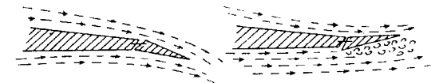
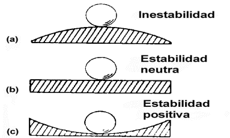
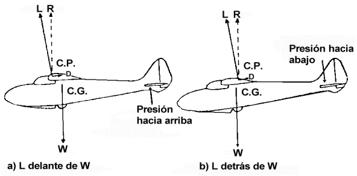
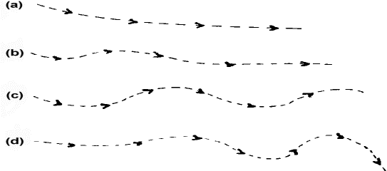
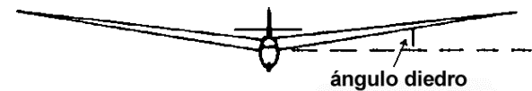
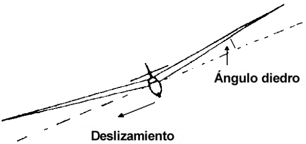
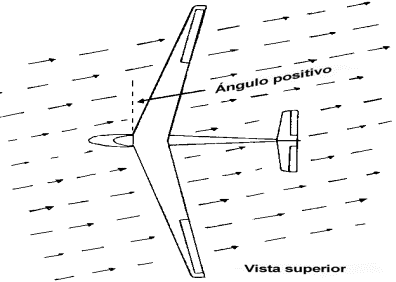

Teoría de Vuelo para Pilotos de Planeador
Stafford Allen
[ Capítulo I ] [ Capítulo II ] [ Capítulo III ] [ Capítulo IV ] [ Capítulo V ] [ Capítulo VI ] [ Capítulo VII ] [ Capítulo VIIIa ] [ Capítulo VIIIb ] [ Capítulo IX ] [ Capítulo X ]
Capítulo V
CONTROL Y ESTABILIDAD
Todo
aparato aéreo se desplaza en tres direcciones, por lo que debe estar equipado con tres
controles. Hemos tocado este tema en el último capítulo cuando definimos los ejes
transversal, longitudinal o de rolido y vertical o de guiñada pero ahora debemos
investigarlos más profundamente. Tomaremos en primer lugar el plano sobre el cual se pica
o cabrea la máquina, es decir, el eje transversal, desde que es el más simple de los
tres.
El timón
de dirección es una superficie movible conectada al borde posterior del empenaje vertical
fijo. El piloto lo opera con los pies, mediante pedales y cables, de tal manera que cuando
el pie izquierdo empuja hacia adelante el pedal correspondiente, el timón de dirección
pivota hacia la izquierda, hace desplazar la cola hacia la derecha y, por lo tanto, la
nariz se mueve hacia la izquierda. Cuando se presiona con el pie derecho tiene lugar la
operación contraria. El control del timón de dirección se ve afectado por los mismos
problemas que los elevadores desde el punto de vista del cambio de velocidad: es
hipersensible a altas velocidades y se vuelve flojo cuando entramos en pérdida, pero si está correctamente
diseñado siempre será efectivo, aun cuando la máquina esté en pérdida. Por lo tanto,
en la pérdida el piloto puede tener que utilizar todo el recorrido del pedal para hacer
girar la máquina. En tierra, durante el despegue o el aterrizaje, si el piloto necesita
corregir la tendencia del planeador a salirse de la línea recta, seguramente tendrá que
hacer amplios movimientos con los pedales debido a su baja velocidad.
El control
en el eje del rolido se logra mediante los alerones. Estos son porciones del borde
posterior de las alas que se encuentran abisagradas y conectadas a la palanca de tal
manera que al moverla hacia la izquierda el alerón izquierdo pivota hacia arriba y el
derecho hacia abajo. El resultado neto es un incremento de la sustentación en la punta
del ala derecha y una disminución en la izquierda, de tal manera que el planeador roía
hacia la izquierda. Si movemos la palanca hacia la derecha ocurre lo contrario. Realmente,
es con los alerones que comenzamos a meternos en problemas. Por supuesto, son tanto más
efectivos cuanto más rápido volamos, pero si lo hacemos lentamente se vuelven muy flojos y en la pérdida se niegan del todo a trabajar para hacer rolar
la máquina. En casos excepcionales incluso pueden hacer rolar la máquina en dirección
contraria cuando se usan violentamente en la pérdida. La razón de esto no es muy obvia,
pero puede advertirse si consideramos lo que le ocurre a las puntas de las alas cuando el
planeador entra en pérdida. Si bajamos un alerón incrementamos -en efecto- la curvatura
del perfil en la punta del ala, con lo que aumenta su ángulo de ataque efectivo. Esto da
como resultado un incremento de la sustentación y una disminución similar en la punta de
la otra ala cuando el alerón se mueve hacia arriba, pero esto sólo ocurre si el ángulo
de ataque es menor que el ángulo de pérdida. Si el planeador entra en pérdida sabemos
que un incremento del ángulo no da como resultado un incremento de la sustentación sino
más bien una disminución, de tal manera que los alerones pueden hacer rolar la máquina
en sentido erróneo. Cerca de la velocidad de pérdida -digamos 3 kilómetros por hora
antes-, el planeador se encontrará volando muy cerca del ángulo de ataque de pérdida y
si observamos la curva de sustentación (Fig. 2) es obvio que un pequeño incremento o
disminución del ángulo de ataque de las puntas de las alas sólo tiene un ligero efecto
en la sustentación, a lo cual se debe la falta de efectividad de los alerones cuando nos
aproximamos a la pérdida. Para llevar al mínimo estos efectos algunas alas de
planeadores tienen cierto alabeo en las puntas. El alabeo significa que el ala está
diseñada con una ligera torsión, de tal manera que el ángulo de ataque es menor en las
puntas que en la sección central del ala. Por este medio el diseñador logra que la
sección central del ala se encuentre en pérdida antes que las puntas, de tal manera que
los alerones aun serán efectivos cuando el planeador entra en pérdida. La efectividad de
este dispositivo varía según las distintas máquinas y en las mejores es sólo un
paliativo; la enfermedad aun está allí.
EFECTOS SECUNDARIOS DE LOS CONTROLES
El uso del elevador en un planeador
no tiene efecto sobre la máquina en el eje de rolido ni sobre el eje de guiñada. Hace
que la máquina pique o cabree, y nada mas.
Sin
embargo, cuando usamos los alerones o los pedales durante el vuelo encontramos que cada
uno de ellos tiene un efecto en el plano del otro. Esto se conoce como efecto
secundario.
Tomemos en
primer lugar los alerones. Imaginemos un planeador en vuelo recto al que el piloto decide
inclinar hacia la izquierda. Mueve su palanca hacia la izquierda, el alerón izquierdo se
eleva y el derecho baja. Esto da como resultado un incremento de la sustentación en la
punta del ala derecha y una disminución de la sustentación en la izquierda, de tal
manera que la máquina rola hacia la izquierda. Pero esto es sólo la mitad de la
historia. Cuando bajamos el alerón derecho hemos incrementado, en efecto, el ángulo de
ataque y ahora sabemos que un incremento del ángulo de ataque significa un incremento de
la resistencia. Lo contrario ocurre en la punta del ala izquierda y allí habrá una
disminución de la resistencia. El resultado de estas resistencias diferentes en las
puntas de las alas es que la máquina rota hacia la derecha. Esto es muy molesto porque la
rotación tiene lugar en dirección equivocada. Si comenzamos un viraje hacia la izquierda
e inclinamos la máquina en ese sentido, no deseamos que la nariz de nuestro planeador
gire hacia la derecha. La cura para esto -si es que podemos llamarle cura- es prevenir que
la nariz rote mediante el uso de los pedales, en este caso hacia la izquierda.
Ahora
veamos el timón de dirección. Si cuando se encuentra volando en línea recta el piloto
de un planeador presiona el pedal derecho, el timón de dirección hará que la nariz de
la máquina gire hacia la derecha pero, al ocurrir esto la punta del ala izquierda
sufrirá una aceleración y la punta del ala derecha una desaceleración. El resultado de
esto es un incremento de la sustentación en la punta del ala izquierda y una disminución
en la derecha, provocando una tendencia a rolar hacia la derecha. Por lo tanto, mientras
el efecto primario del timón de dirección es producir una guiñada, el efecto secundario
da como resultado una tendencia a rolar en la misma dirección. Este efecto de rolido en
cualquier circunstancia actúa en la dirección correcta, que es lo más que se puede
pedir, de tal manera que en general el efecto secundario del timón de dirección no
constituye un problema. Después de todo, si aplicamos pedal izquierdo no es un mal efecto
que la máquina trate de inclinarse también hacia la izquierda. La cuestión es que en la
pérdida el efecto secundario se hace muy intenso y el uso del timón de dirección puede
dar lugar al comienzo de un tirabuzón. La razón de esto es que durante o cerca de la
pérdida la sustentación en las puntas de las alas está muy alterada por cambios de
velocidad comparativamente pequeños. Discutiremos nuevamente este problema con mayor
detalle cuando examinemos el tirabuzón.
Estos dos
efectos secundarios de los alerones y timón de dirección son mucho más pronunciado en
nuestros planeadores que en un avión a motor. La razón principal es que los planeadores
generalmente tienen una gran envergadura en relación a la superficie alar; en una
palabra, un gran alargamiento. El
alargamiento se define como la relación envergadura / cuerda o, en el caso de las alas
ahusadas, en las cuales la cuerda varía, (envergadura)2 / superficie alar. Si tenemos una gran envergadura
resulta claro que cualquier diferencia de resistencia en los alerones tendrá un efecto y
una guiñada mucho mayor que si la envergadura fuera pequeña. En forma similar, si
hacemos rotar el planeador con el timón de dirección, la aceleración y desaceleración
de las puntas de las alas es mucho mayor en una máquina de gran envergadura que en una de
alas pequeñas.
¿Qué
puede hacer el diseñador respecto a estos efectos secundarios? Como hemos visto, respecto
del timón de dirección no vale la pena hacer nada, desde que el efecto de rolido en este
caso no es algo perjudicial. Si el timón de dirección es bastante grande y fuerte como
para trabajar razonablemente bien en la pérdida, nos dará un medio de controlar el
rolido de nuestro planeador cuando en ese momento los alerones son virtualmente inútiles.
Sin embargo, esta distinta resistencia de los alerones es una molestia y el diseñador
inteligente hace todo lo que puede para reducirla al mínimo.

Un método
muy común que se emplea en muchos planeadores es el de los alerones diferenciales. Por
medio de este hábil dispositivo en los controles, el alerón que se eleva lo hace en
mucha mayor medida que el que desciende. Este sistema indudablemente ayuda, pero no
constituye una cura completa. Otro método que es muy popular en aviones con motor es el
uso de los alerones Frise. En este caso los alerones tienen su abisagramiento desplazado
hacia atrás y presentan un borde afilado en la parte inferior. El resultado es el que se
indica en la figura 10. Cuando el alerón baja el borde afilado es protegido por la zona
posterior del ala. Tiene lugar el habitual incremento de resistencia, por supuesto, pero
en el otro lado el alerón que se eleva baja el borde afilado sobrepasando el ala y
provoca una resistencia extra. Mediante un diseño cuidadosamente planeado esta
resistencia extra puede regularse para que equilibre, aproximadamente, la resistencia en
el alerón que desciende. Ahora podemos advertir la objeción que presenta este
dispositivo para los planeadores: significa resistencia adicional y la resistencia es una
de las cosas que debemos mantener a un mínimo si nuestro planeador ha de ser eficiente. A
pesar de ello en algunos planeadores se encuentran modificaciones del principio del
alerón Frise.
Ahora
podemos ver claramente por qué en vuelo normal utilizamos los alerones y el timón de
dirección conjuntamente. Tomemos, por ejemplo, un planeador que ejecuta un viraje a la
derecha. El piloto mueve la palanca hacia la derecha y aplica la necesaria inclinación,
pero al mismo tiempo debe aplicar timón de dirección para evitar que la nariz del
planeador gire hacia la izquierda, debido al efecto secundario de los alerones. Cuando ha
obtenido el ángulo de inclinación necesario y la máquina ha comenzado a virar, la punta
del ala exterior estará desplazándose más rápido que la interior y, en consecuencia,
producirá más sustentación. Para mantener constante la inclinación -que es la base de
un buen viraje-, el piloto debe centrar los alerones y aun puede tener que aplicar palanca
ligeramente hacia el otro lado para prevenir un incremento de la inclinación. Las
resistencias de las puntas de las alas son aproximadamente iguales, por lo que el timón
de dirección también debe centrarse. Esta última afirmación no es absolutamente exacta
desde que la resistencia de la punta del ala exterior puede ser ligeramente mayor que la
interior debido a su mayor velocidad. Por otro lado, al dar contraalerón, es decir, al
llevar la palanca hacia el lado opuesto del viraje podemos estar incrementando la
resistencia de la punta del ala interior para compensar esta situación.
No es
posible ser dogmático a este respecto dado que los planeadores varían en esta materia.
Lo fundamental es que el timón se centra -o casi se lleva a esa posición- en un viraje
constante desde que, como hemos visto al principio, es la fuerza de sustentación y no el
timón de dirección lo que obliga al planeador a desplazarse en círculo. Cuando el
piloto quiere retomar el vuelo recto nivela las alas mediante un movimiento de palanca
hacia la izquierda y, nuevamente, debe usar timón de dirección izquierdo para compensar
el efecto de rotación producido por los alerones. Durante el viraje, por supuesto, el
piloto debe utilizar el elevador para mantener la nariz en la misma posición relativa
respecto al horizonte. El piloto que ha aprendido a realizar virajes en forma
satisfactoria sabe que lo hace como lo hemos explicado pero puede que tenga una vaga idea
de por qué lo hace así. Con todo lo dicho creemos haberle proporcionado algunas ideas
sobre las cuales pensar.
Un último
punto sobre el tema de los controles. Un planeador que sea realmente agradable de volar no
sólo debe responder al movimiento de los controles con rapidez sino que debe exigir un
esfuerzo razonable para ello y, más importante aun, el esfuerzo requerido para operar los
tres controles debe ser similar. Cuando se cumplen estas condiciones decimos que los
controles están bien armonizados. Sabemos
que algunos tipos de planeadores son más fáciles de volar que otros y la falla por lo
general reside en el hecho de que uno de los controles es mucho menos efectivo o parece
necesitar mucho más esfuerzo para ser operado que los otros.
CONTROLES AUXILIARES
El piloto de un planeador tiene una o dos palancas para hacer su
tarea más simple (o más complicada, si usted lo prefiere). Seguramente dispondrá de un
compensador. Se trata de una pequeña palanca, generalmente montada en un costado de la
cabina, mediante cuyo uso el piloto puede hacer que la maquina vuele sola a
cualquier velocidad. Esto constituye una gran ventaja cuando se realizan largos vuelos ya
que el piloto puede evitarse parte de la fatiga que implica controlar continuamente la
máquina y es de gran ayuda cuando se vuela a ciegas. El compensador además permite a
pilotos de distintos pesos compensar los efectos de ligeras diferencias de posición del
centro de gravedad. Sin un compensador el piloto pesado por lo general encontrará que
debe aplicar una pequeña presión hacia atrás en la palanca para mantener la velocidad
de óptimo planeo. Esto es debido al peso extra del piloto, lo cual da como resultado que
el centro de gravedad se halle ligeramente desplazado hacia adelante, más de lo normal,
con lo que el planeador adopta una tendencia a bajar la nariz. Estamos hablando, por
supuesto, de un planeador común en el cual el piloto se sienta bien adelante en la
cabina. Si la configuración del planeador es tal que el piloto se sienta detrás del
centro de gravedad de la máquina, entonces el peso extra de un piloto producirá un
efecto inverso, pero esto no es muy común.
La palanca
del compensador actúa mediante cables sobre una pequeña superficie rectangular ubicada
en la parte posterior del elevador, moviéndola hacia arriba o hacia abajo. Muchas
personas se sienten desconcertadas por el hecho de que el compensador parece actuar al
revés. Es decir, para bajar la nariz del planeador empujamos la palanca hacia adelante y
el compensador se mueve hacia arriba y viceversa. A primera vista podría suponerse que
llevando hacia arriba el compensador se haría bajar la cola y levantar en lugar de bajar
la nariz. En realidad, el compensador no hace bajar la cola sino que actúa solamente
sobre el elevador. Esto tiene el mismo efecto que llevar la palanca hacia adelante y bajar
el elevador. Algunos viejos planeadores no tienen compensador y en otros puede hallarse
una forma de este dispositivo consistente en nada más que un resorte o pedazo de cuerda
elástica fijada a la palanca o al cable del elevador, cuya tensión puede ser ajustada en
vuelo. Si bien este sistema trabaja adecuadamente, tiene el inconveniente de que
interfiere de alguna manera con la sensibilidad del
control del elevador. Con el verdadero compensador el piloto puede apreciar el
efecto del aire sobre la superficie del elevador, mientras que de esta otra manera esa
diferencia de sensación puede hallarse oculta por la presión del resorte. Una pequeñez,
tal vez, pero sólo se consiguen controles realmente buenos prestando atención a una
serie de pequeños detalles.
Otro
control auxiliar que seguramente encontraremos en algunos altoveleros es una palanca
ubicada a la izquierda de la cabina, parecida al acelerador de un avión. Esta corresponde
a los spoilers o
frenos y se ubica en el mismo lugar del acelerador de un avión porque sus funciones son
similares. Trabaja en el mismo sentido, es decir, cuando la palanca se lleva adelante los spoilers o
los frenos se encuentran cerrados, lo cual corresponde a dar motor; palanca
atrás significa spoilers o
frenos abiertos, es decir, cortar motor. Los
spoilers no
deben confundirse con los frenos, aunque su acción es muy similar y dado que los spoilers son
mas simples los consideraremos primero.
Los spoilers son
delgadas tiras de alrededor de un metro de largo y unos 7 centímetros de ancho. Están
ubicados en la parte superior del ala, aproximadamente a la altura del mayor espesor de la
sección. Cuando se hallan cerrados permanecen a nivel con la superficie del ala pero como
están abisagrados en el borde delantero al presionar la palanca se levantan más o menos
en forma perpendicular a la superficie del ala. Generalmente hay un spoiler en
cada ala, dispuestos bien alejados del alerón, hacia el fuselaje, pero lo bastante
distanciados de éste como para que su acción no interfiera con los planos de cola. Los spoilers fueron
creados, en primer lugar, porque a medida que los diseñadores producían mejores
planeadores, encontraban que era más y más difícil aterrizar con seguridad o hacer una
aproximación justa. Un buen ángulo de planeo significa que un pequeño error de
apreciación en el aterrizaje da como resultado el quedarse corto o
irse largo y esto convierte el aterrizaje en un pequeño campo en
algo muy difícil. Lo que querían los pilotos era algún dispositivo mediante el cual se
pudiera disminuir el ángulo de planeo sin incrementar la velocidad y mediante los spoilers se
conseguía exactamente esa finalidad. Cuando se levanta el spoiler éste
destruye el flujo del aire sobre la parte superior del ala en la porción de la
envergadura ocupada por el mismo. La sustentación sobre esta parte del ala es destruida
(de aquí el nombre inglés: spoil = echar a perder, arruinar) y
para mantener la sustentación total igual al peso, debe incrementarse el ángulo de
ataque. Los spoilers producen
un aumento considerable de la resistencia y el efecto neto es una disminución de la
relación L/D o, lo que es lo mismo, se obtiene una trayectoria con más pendiente (es
decir, una disminución de la relación de planeo). El
piloto puede ajustar su ángulo de descenso con facilidad y el aterrizaje de precisión se
transforma en algo relativamente simple.
Sin
embargo, a medida que más y más pilotos comenzaron a volar en nube se advirtió la
necesidad de disponer de algo mejor. Los spoilers proveen
resistencia extra por lo que su efecto no es muy pronunciado a altas velocidades, y una de
las dificultades del vuelo en nube es la de que, si el planeador baja la nariz
inadvertidamente, puede llegarse a una velocidad muy alta en un momento. Lo que los
pilotos querían ahora era una forma de producir una gran resistencia de tal manera que,
no importa qué hiciera el planeador, no se pudiera exceder la velocidad límite de
seguridad cuando el elemento que producía la resistencia estuviera en acción. Veremos
cuál fue la respuesta a esta exigencia.
FRENOS AERODINÁMICOS
Hay
varios tipos de frenos pero el efecto de todos ellos es similar. Básicamente consisten en
superficies planas similares a los spoilers, operadas
en forma similar por una palanca. Cuando estas superficies se encuentran cerradas están
ocultas o permanecen a nivel con la superficie del ala. Sin embargo, en el caso de los
frenos por lo general se dispone de una placa arriba y otra debajo del ala, las cuales no
se hallan abisagradas en su borde delantero sino que salen en forma perpendicular a la
corriente de aire, bien separadas de las alas. El efecto a baja velocidad es muy similar
al de los spoilers, pero
los frenos generalmente producen un efecto mayor. A altas velocidades los frenos dan lugar
a un gran incremento de la resistencia. Es este incremento lo que evita que el planeador
exceda su máxima velocidad permitida. Los spoilers cuando
se abren tienden a hacer que baje la nariz del aparato. Los frenos, desde que operan
encima y debajo de las alas, generalmente producen una pequeña variación o ninguna en la
posición del aparato. Algunos tipos de freno, sin embargo, tienden a abrirse por la
succión durante el vuelo y en estos casos el control debe incluir algún tipo de traba
cuando aquellos se hallan cerrados.
Spoilers y frenos
no deben confundirse con
flaps. Los flaps también se utilizan en algunos planeadores, aunque
son casi universales en los aviones. Los flaps, aunque aumentan la resistencia, también
incrementan la sustentación y permiten a la máquina volar más lentamente. Spoilers y
frenos disminuyen la sustentación, mientras aumentan la resistencia y, por lo tanto,
nuestro planeador tendrá una velocidad de pérdida mayor cuando aquellos estén en uso.
Mucha gente no se da cuenta cabal de esta circunstancia y esta es, probablemente, la
razón de algunos aterrizajes bruscos.
Los frenos
-y también los spoilers- cuando
se encuentran parcialmente sacados tienen otra propiedad valiosa. Cuando se utilizan para
disminuir la velocidad en momentos en que el piloto se encuentra en dificultades
temporarias dentro de una nube, generalmente producen un marcado incremento en la
estabilidad transversal. Esto significa que el planeador volverá al vuelo nivelado si se
lo deja librado a sí mismo.
ESTABILIDAD
Cuando
decimos que algo es estable queremos significar que si su posición se modifica tenderá a
volver a su estado original. La mejor analogía para esto, que ha sido usada muchas veces
en otros libros, es la que darnos a continuación.
En la
figura 11 a) vemos una bolita en equilibrio en la parte superior de una superficie
curva. Si le imprimimos un pequeño movimiento rodará fuera de la superficie, no
importa cuán suave haya sido el impulso. La bolita es inestable porque
cualquier perturbación destruye su estabilidad. En la figura 11 b) la bolita descansa
en una superficie plana y en este caso un pequeño impulso simplemente hará que se mueva
y quede en reposo otra vez en una posición distinta. No tratará de desplazarse mucho ni
de volver a su posición original. Llamamos a esto estabilidad neutra. Pero en la
figura 11 c) la bolita descansa en el fondo de un pocillo y si la empujamos volverá a su
posición original. Llamamos a esto estabilidad positiva. La bolita seguramente
se desplazará hacia atrás y adelante varias veces antes de detenerse, pero esto no
afecta el hecho de que trata de volver a su estado original.

La estabilidad
positiva, o sea la capacidad de volver sin ninguna ayuda a una determinada situación
de vuelo cuando se produce una perturbación, es una cualidad muy útil en un planeador.
Un planeador inestable puede constituir una amenaza porque ello significa que si la
nariz de la máquina cae por alguna razón, puede entrar en picada cada vez más rápido a
menos que el piloto entre en acción con el control del elevador. Un planeador con estabilidad
neutra es admisible, ya que esto significa que si el aparato es perturbado en su
vuelo, continuará en el nuevo estado sin realizar ningún intento de corregirse a sí
mismo, pero tampoco sin mostrar tendencia a empeorar la perturbación. Es decir, si la
nariz del planeador baja por alguna razón, permanecerá en esa actitud. Un planeador
positivamente estable, sin embargo, tratará de volver por su propia cuenta al estado de
vuelo en que se encontraba. El vuelo a ciegas en nube se hace mucho más simple si el
planeador tiene una buena estabilidad positiva desde que el piloto puede, en gran medida,
permitir que la máquina vuele sola. Como todas las cosas, no se puede tener mucho de algo
bueno y, como veremos, una excesiva estabilidad puede echar a perder otros aspectos buenos
del diseño de un planeador.
Cuando nos
referimos a los controles vimos que podíamos examinar los efectos del control del
elevador separadamente, mientras que los efectos de alerones y timón de dirección se
encontraban ligados entre sí. Exactamente lo mismo ocurre en lo relativo a la
estabilidad. Una aeronave puede ser estable en cuanto a picar o cabrear, e inestable en
cuanto a rolido, pero estable en guiñada, o puede tener alguna combinación de los tres.
En la práctica no hay planeadores inestables porque nunca obtendrían el certificado de
aeronavegabilidad, pero su estabilidad alrededor de uno de los tres ejes puede ser muy
pequeña o aun neutra.
Podemos
considerar la estabilidad respecto al eje transversal en forma separada; por lo tanto,
vamos a referirnos a ella en primer lugar. Cuando investigamos las propiedades de los
perfiles alares advertimos que el centro de presión -el punto donde se considera que
actúa la sustentación- se desplaza bajo ciertas circunstancias. A ángulos de ataque
comunes, es decir, los que corresponden al planeo normal, el centro de presión (CP)
estará ubicado aproximadamente a un tercio de la cuerda, hacia atrás, a partir del borde
de ataque del ala, el lugar, en realidad, donde el diseñador inteligente ha colocado el
larguero principal que va desde la punta hasta el nacimiento o raíz del ala. Pero
supóngase que, mientras nos hallamos planeando serenamente, algo produce una ligera
elevación de la nariz de la máquina. El ángulo de ataque se incrementa, la
sustentación crece y el planeador sufre una aceleración hacia arriba; pero esto no es
todo. A medida que el ángulo de ataque aumenta, el centro de presión se desplaza hacia
adelante ligeramente, de tal manera que si el planeador estaba en equilibrio antes de que
la nariz se elevara, el pequeño movimiento hacia adelante del centro de presión y la
fuerza de sustentación harán que la nariz tienda a elevarse aun más. Justamente lo contrario tiene lugar si algo hace que la nariz descienda. Por
lo tanto, un ala por sí misma es inestable con relación al eje transversal y para
hacerla estable debemos utilizar otros medios. El más fácil consiste en disponer las
superficies de cola al final de un fuselaje razonablemente largo.
Veamos
nuevamente por un momento la figura 8. Desde que L, D y W están en equilibrio y todas
ellas se encuentran en un punto, el planeador está en equilibrio y permanecerá en ese
estado tanto tiempo como no haya nada que lo perturbe. Pero, como hemos dicho antes, esta
es una situación ideal y raramente tiene lugar en la práctica. Por lo general, la
sustentación L y el peso W no tienen el mismo punto de aplicación y si así ocurre,
entonces la sustentación debería estar o bien delante o bien detrás del peso W.
Supóngase que la sustentación actúa delante del peso. Entonces el planeador tendrá
tendencia a elevar la nariz y si queremos mantener el equilibrio deberemos disponer las
cosa de tal manera como para que haya un empuje hacia arriba en la cola para lograr el
equilibrio. En forma similar, si la sustentación está ubicada detrás del peso
necesitaremos un empuje hacia abajo en la cola para equilibrar el planeador.

La figura
12 muestra estos dos casos. Ahora, en ambas situaciones el planeador puede estar en
equilibrio siempre que este empuje sobre la cola sea el exactamente requerido, pero esto
solo no asegura que la máquina sea estable en el eje transversal. Recuérdese que para la
estabilidad el planeador debe retornar o, en cualquier circunstancia, tratar de retornar,
al estado de vuelo en que se encontraba antes de ser modificado. Sabemos que si se
incrementa el ángulo de ataque el centro de presión se desplazará hacia adelante (hasta
la pérdida, cuando vuelve atrás nuevamente) y esto tiende a elevar la nariz e
incrementar el ángulo de ataque aun más. Sin embargo, si el cambio en la presión de la
cola debido al incremento del ángulo de ataque contrapesa esta tendencia, el planeador
tratará de bajar su nariz otra vez hacia su posición original. En el caso de la figura
12 a) esto puede significar un incremento de la presión hacia arriba en la cola y en el
caso b) una disminución de la presión hacia abajo o bien una presión hacia arriba. Como
ejemplo, supongamos que un planeador está volando en equilibrio con sus alas a un ángulo
de ataque de 6º y su cola a 2º. Esto significa que hay una presión hacia arriba en la
cola. Una ráfaga incrementa momentáneamente el ángulo de ataque en 2º. El ángulo de
ataque del ala es ahora de 8º y hay un incremento de la sustentación de 8/6, o 1,3 de
su valor anterior. El ángulo de ataque de la cola, sin embargo, se ha incrementado de 2º
a 4º, es decir, su presión hacia arriba es doble. Esto produce una
fuerte tendencia a bajar la nariz, lo que hace volver el ángulo de ataque de las alas al
valor original de 6º.
En el caso
de algunas perturbaciones que hagan disminuir el ángulo de ataque haciendo bajar la
nariz, la presión en la cola se alterará en sentido contrario. Los factores que puede
emplear el diseñador para obtener el grado exacto de estabilidad que desea son: la
superficie del empenaje horizontal, su distancia respecto al centro de gravedad, su perfil
alar y el ángulo a que está dispuesto respecto al fuselaje. Con relación a este último
punto lo que interesa al diseñador es el ángulo de ataque real, el cual no será el
ángulo a que parece estar ubicado, ya que la superficie de cola trabaja en una corriente
descendente detrás del ala. Para ser exactos, el ángulo de ataque del plano de cola
sólo afecta la precisión del vuelo pero no
la estabilidad. 
Un
planeador estable respecto al eje transversal puede, en realidad, comportarse en una de
las siguientes cuatro formas. Puede volver rápida y suavemente a su actitud primitiva; no
se encuentra a menudo en la práctica, pero es una deliciosa cualidad. Algunos planeadores
se aproximan a este ideal cuando se vuelan con los frenos afuera. Esto se muestra en la
figura 13 a). El resultado más común cuando se produce una perturbación respecto al
plano transversal es que el planeador se excede en la corrección (exactamente como usted
lo hacía en los primeros vuelos) pero después de unas pocas oscilaciones, reasume el
planeo normal (fig. 13 b). Puede que comience a oscilar hacia arriba y abajo y continúe
haciéndolo; las oscilaciones no aumentarán ni disminuirán (fig. 13 c). Finalmente, como
se indica en la figura 13 d), las oscilaciones pueden aumentar hasta que el planeador
cabree en forma empinada y entre en pérdida. En este último caso decimos que el
planeador es dinámicamente inestable, aunque estáticamente es estable porque
trata de efectuar la corrección. Todo lo dicho, por supuesto, supone que el piloto no
hace nada para corregir el vuelo del planeador sino que lo abandona a su suerte.
Hemos
supuesto que el centro de gravedad del planeador permanece fijo en un lugar. En la
práctica puede variar ligeramente según el peso de cada piloto, y el movimiento del
centro de gravedad tiene un gran efecto en la estabilidad con respecto al eje transversal.
Cuando se desea obtener el certificado de aeronavegabilidad de un planeador deben hacerse
varios ensayos para encontrar las distintas posiciones del centro de gravedad donde
estabilidad y equilibrio resultan satisfactorios y esta gama de posiciones del centro de
gravedad se especifica en el documento respectivo. Puede ser lamentable para un piloto
volar un planeador con una carga que exceda los límites impuestos por el centro de
gravedad. Para evitar consecuencias lamentables cada planeador tiene en su cabina una
indicación que establece los pesos máximo y mínimo del piloto, cuándo puede llevarse
lastre y bajo qué circunstancias.
Un
planeador es más eficiente si puede ser dispuesto para que a su velocidad de mínimo
descenso o a la de su óptimo planeo (generalmente son distintas pero muy próximas), la
presión en el plano de cola sea mínima, desde que toda carga en la cola implica una
pequeña resistencia. Lo mejor de todo, por supuesto, es la situación ideal en la
que no hace falta carga alguna en la cola. Si usted compra un planeador lo mejor será que
ubique la exacta posición del centro de gravedad con usted a bordo y, si esto no coincide
con la posición del centro de presión a las velocidades indicadas, equilíbrelo mediante
un pequeño lastre cuidadosamente ubicado. Algunos fabricantes especifican la posición
ideal del centro de gravedad, lo cual le evitará una cantidad de cálculos.
Hay unos
pocos planeadores que tienen lo que se conoce como elevadores de péndulo. En este sistema todo el elevador se mueve cuando se lleva la
palanca hacia atrás o hacia adelante y no hay un plano fijo. La estabilidad en el plano
transversal en este tipo de planeadores es un problema muy complejo y depende de muchas
cosas, de las cuales no es la menor la fricción en el circuito de control del elevador.
En algunos tipos más recientes de planeadores el elevador de péndulo ha reaparecido bajo
una nueva forma. Aquí se ubica un pequeño plano o planos en el borde posterior el cual
altera completamente la situación. Estas superficies se mueven en la misma forma que el
elevador, es decir, hacia arriba cuando el elevador se mueve hacia arriba y viceversa. De
esta manera, el elevador es autoestable desde que si el piloto lo mueve hacia arriba, esta
superficie adicional tiende a bajarlo nuevamente. Mediante la alteración del sistema de
conexión de estas superficies la estabilidad puede hacerse tan grande o pequeña como lo
desee el diseñador. Generalmente la posición de estos planos respecto al elevador puede
ajustarse desde la cabina y entonces el dispositivo trabaja con un compensador.
Todos los
planeadores son estables con respecto a la guiñada. Si no lo fueran tenderían a girar y
volar hacia atrás. La estabilidad es gobernada por dos cosas. Primero, la cantidad de
superficie ofrecida a una corriente de aire que ataca a un planeador desde un lado y
segundo y más importante, dónde se halla ubicada dicha superficie con respecto al centro
de gravedad del planeador. Imaginemos un planeador en vuelo normal; algo lo hace girar
hacia la izquierda sin inclinarse, de tal manera que el aire en lugar de atacar al
planeador de frente lo hace en cierto ángulo del lado derecho. Esto provocará un
incremento de la presión en las superficies expuestas al ataque de la corriente de aire y
probablemente alguna disminución de la presión sobre el otro lado. El planeador, por lo
tanto, tiende a producir una aceleración lateral hacia la izquierda. Pero esto no es
todo; las superficies laterales
No
obstante, resulta importante advertir que si en un planeador se lleva a cabo alguna
modificación que afecta su área lateral, tal corno instalar una cabina cerrada en lugar
de una abierta, seguramente se verá afectada la estabilidad de guiñada. En resumen,
debemos tener estabilidad de guiñada y todos los planeadores la tienen. Podemos disponer
de esta condición en gran medida y veremos sus consecuencias enseguida.
Hemos
dejado para el final lo relativo a la estabilidad lateral o en rolido porque es más
complicada que la estabilidad en los otros dos ejes. Como antes, un planeador que es
estable en el rolido tratará de volver por sus propios medios a su posición anterior. Si
un ala está volando normalmente, es decir, no se halla en pérdida, y tratamos de hacerla
rolar, el ala que se desplaza hacia arriba se encontrará volando a un ángulo de ataque
reducido y el ala que se está desplazando hacia abajo estará volando a un ángulo de
ataque incrementado mientras tiene lugar el rolido. Esto significa mayor sustentación
para el ala que se desplaza hacia abajo y menor para la que se está elevando, lo cual
tiende a detener el movimiento. Cuanto más rápido sea el rolido más fuerte será la
acción opuesta. Este efecto se hace presente sólo cuando el ala está rolando. Una vez
que el movimiento de rolido se ha detenido ya nada hará que el ala vuelva a su posición
anterior. Simplemente este efecto trata de detener todo movimiento de rolido. Incluso esto
sólo se produce cuando el ala no está en pérdida.
Investigaremos
la situación que tiene lugar cuando el ala entra en pérdida en el capítulo relativo a
pérdidas y tirabuzón. Por lo tanto podemos afirmar que un ala que no se encuentra en
pérdida resiste todo movimiento de rolido. Esto no es del todo ventajoso. La estabilidad
requiere que el ala vuelva a su nivel cuando ha tenido lugar un rolido de pocos grados.
Si un
planeador rola unos pocos grados y la máquina no vira, deslizará hacia el lado del ala
más baja. Si debido al deslizamiento el centro de presión de la fuerza lateral del
planeador se encuentra bien por encima del centro de gravedad del velero, éste mostrará
tendencia a rolar en sentido inverso. Esta fuerza, sin embargo, no es muy grande y su
centro de presión raramente se encuentra ubicado muy arriba del centro de gravedad, por
lo que la acción de palanca es pequeña y no podemos descansar solamente en ella para
provocar un movimiento de rolido que lleve otra vez el aparato a su nivel anterior. En
casos especiales era útil, como en algunos planeadores primarios. En estas máquinas el
ala era alta y el centro de gravedad bajo, y además el plano en forma de A ubicado sobre
el ala, que soportaba los cables tensores, se encontraba entelado. Si una máquina de este
tipo deslizaba, el aire que atacaba esta superficie en forma de A desde un costado tenía
un considerable efecto corrector, desde que la fuerza se encontraba bien por encima del
centro de gravedad.
No
desearnos volar primarios por el resto de nuestras vidas, por lo que se necesitaba algo
mejor y el método más usual para
obtener buena estabilidad en el rolido es dar a las alas un poco de diedro. El ángulo
diedro es el que forma el ala con relación a una línea horizontal cuando el planeador se
encuentra nivelado. Esto se ilustra en la figura 14 y muchos planeadores tienen un
pequeño ángulo diedro.

La manera
en que esto trabaja es obvia. Si un planeador rola levemente y no vira, deslizará hacia
el ala baja (fig. 15). Hemos dicho eso antes, pero lo repetirnos porque es muy importante.
Tan pronto como desliza, el ala baja está volando
a un ángulo de ataque mayor y produce más sustentación, mientras que ocurre exactamente
lo contrario en el ala elevada. Esto produce un efecto de rolido, el cual persiste
mientras hay algún deslizamiento, es decir, hasta que el ala está otra vez nivelada. Si
usted encuentra alguna dificultad en comprender esto imagine un planeador como el de la
figura 15, pero
con un ángulo diedro exagerado, deslizando, y el efecto será mucho más claro. 

Esto se
muestra en la figura 16, la cual indica asimismo la forma en que trabaja. El planeador
está guiñando hacia la derecha y resulta claro que el ala izquierda penetra en la masa
de aire correctamente, mientras que la derecha (superior en la figura) lo hace con un
cierto ángulo. Hay, por lo tanto, mayor sustentación en el ala izquierda que en la
derecha y el planeador gira en sentido contrario hasta que la guiñada desaparece.
La flecha
positiva también da una mano en la estabilidad de guiñada desde que el ala izquierda
presenta al aire un área frontal mayor que la derecha, por lo que ayuda a las superficies
verticales de cola a virar el planeador y enfrentarlo nuevamente en la dirección de vuelo
original. Esta flecha positiva tiene que ser pronunciada para que sus efectos sean
importantes, lo cual involucra algunos problemas de diseño. Los largueros de las alas no
se unen en el medio y las alas producen un efecto de torsión en la conexión de la raíz.
Todo ello significa estructura extra y peso adicional para soportar estas fuerzas. La
flecha positiva no se utiliza mucho en los planeadores actualmente, excepto en algunos
diseños de alas volantes. En estos casos la flecha positiva es tan grande que las puntas
de las alas están lo suficientemente atrás como para actuar como estabilizadores. En
realidad, en lugar de no tener cola estos planeadores tienen dos colas.
Cualquiera
sea el sistema o combinación de sistemas que utilicemos para obtener estabilidad de
rolido, hay un hecho inmutable. No habrá efecto de corrección para volver un planeador a
su nivel horizontal hasta que el planeador deslice. Entonces las fuerzas entran en juego y
nivelan las alas nuevamente.
Aquí es
cuando comienzan los problemas porque tan pronto como el planeador desliza, la estabilidad
de guiñada se ve afectada y los planos verticales de cola hacen su tarea para encarrilar
al planeador enfrentándolo al viento relativo. Esto significa que la estabilidad en
rolido y en guiñada se encuentran actuando en forma conjunta y si una de ellas actúa
mucho puede destruir a la otra. Por ejemplo, supongamos que tenemos un planeador con buena
estabilidad de rolido y una fuerza excepcional de estabilidad de guiñada y permitimos que
este planeador role hasta una inclinación de 5º hacia
la derecha. Después de un segundo o dos se producirá un apreciable deslizamiento hacia
la derecha y la estabilidad de rolido comenzará a actuar para volver a nivelar las alas.
Antes de que esto pueda ocurrir, la fuerte estabilidad de rotación comenzará a hacer
girar el planeador hacia la derecha y una vez que la máquina comienza a girar, el ala
izquierda, ubicada en la parte exterior del viraje, se encontrará desplazándose más
rápido que la derecha. Hay mayor sustentación en el ala izquierda y menos en la derecha,
de tal manera que el planeador rola más hacia la derecha, desliza más hacia la derecha y
el efecto se hace presente. Asimismo, la estabilidad de guiñada, en una enérgica
tendencia a mantener el planeador enfrentado al viento relativo forzando la nariz a girar
hacia la derecha, ahora empuja la nariz por debajo del horizonte debido al ángulo de
inclinación. La velocidad se incrementa y ahora la estabilidad en el eje transversal
entra en el conflicto tratando de empujar la nariz hacia arriba, desde que el planeador
está bien inclinado, y todo lo que puede hacer es aumentar el giro. Esto lleva a una espiral descendente a
alta velocidad. Por lo tanto, resulta claro que si la estabilidad en los tres planos no se
encuentra equilibrada podemos llegar a lo que se conoce como inestabilidad en espiral, aunque
el planeador sea estable en cada uno de los tres planos, separadamente.
Una
excesiva estabilidad en cualquiera de los tres planos es entonces algo que debe evitarse.
Excesiva estabilidad en el eje transversal lleva frecuentemente a una inestabilidad
dinámica y también significa que se necesita mayor movimiento de los controles para que
el planeador supere su estabilidad en ese plano.
Una
excesiva estabilidad de rolido implica pobre respuesta de los alerones, los cuales
ofrecerán una gran resistencia o efecto secundario mientras que, como liemos visto, mucha
estabilidad de guiñada puede significar inestabilidad en espiral. Afortunadamente,
además de todas las demás cualidades, el diseñador puede proporcionar la cantidad
exacta de estabilidad en cada uno de los tres planos, para permitir un vuelo fácil y
controles ligeros.
Volver Arriba